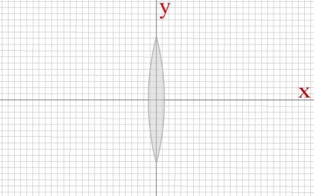
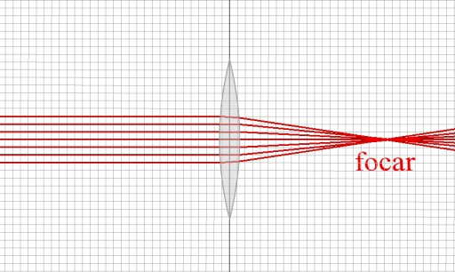
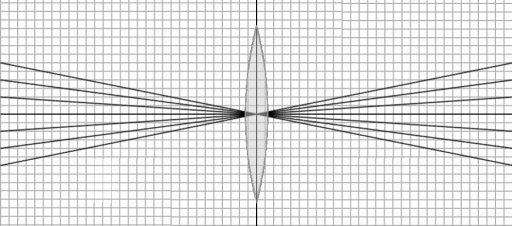
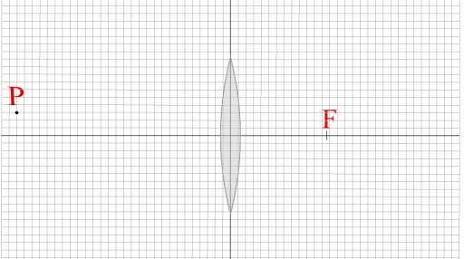
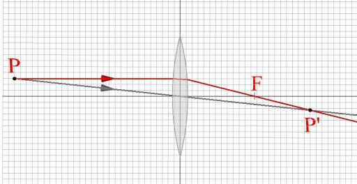

Lentile convergente
 Activitatea experimentală 1
Activitatea experimentală 1
Determină unde este punctul în care o lentilă subţire concentrează un fascicul paralel de lumină. Lucrează în echipă.
Pasul 1. Trasaţi pe o foaie dublă cu pătrăţele două segmente perpendiculare şi notaţi−l pe unul x, iar pe celălalt y.
Pasul 2. Aşezaţi, ca în figura 1, o placă plană de sticlă, mărginită de două suprafeţe curbe (din trusa de optică). Marcaţi pe hârtie
conturul plăcii.

Fig. 1.  Lentilă subţire.
Lentilă subţire.
Pasul 3. Trimiteţi lumina laserului paralel cu segmentul x, la diferite distanţe de acesta.
Observaţi cum este deviată lumina la trecerea prin lentilă.
Trasaţi drumul luminii şi determinaţi poziţia locului în care lentila concentrează un fascicul paralel de lumină.
Segmentul x trece prin centrele de curbură ale feţelor curbe ale lentilei (centrele cilindrilor din care fac parte feţele lentilei).

Numim axă optică principală a unei lentile axa care trece prin centrele de curbură ale lentilei.
Refracţia luminii pe suprafeţele curbe ale lentilei subţiri deviază diferit razele unui fascicul paralel cu axa optică principală, astfel încât acestea
sunt concentrate practic într−un punct de pe axa optică principală (figura 2).

Fig. 2.
Concetrarea aproape într−un punct a unui fascicul paralel de lumină.
În acest punct se formează imaginea reală a unui punct al unui obiect aflat pe axa optică principală, foarte departe de lentilă.
Numim lentilă convergentă lentila care transformă un fascicul paralel de lumină într−unul convergent.
Lentila din figura 2 este o lentilă convergentă.
Numim focar imagine punctul în care se formează imaginea unui punct aflat foarte departe de lentilă.
Distanţa de la lentilă la forcarul imagine este numită distanţă focală imagine.
 Provocarea 1
Provocarea 1
Cât este distanţa focală imagine a lentilei cu care ai lucrat la activitatea experimentală 1?
Activitatea experimentală 2
Lucrează în echipă.
Pasul 1. Trasaţi pe foaia de hârtie utilizată la activitatea experimentală precedentă un "evantai" de segmente care trec prin centrul lentilei
(figura 3).

Fig. 3.
Un set de segmente care trec prin centrul lentilei.
Pasul 2. Trimiteţi lumina laserului spre centrul lentilei, pe direcţiile trasate. Observaţi direcţia luminii după ce trece prin lentilă.
Lumina trece prin centrul unei lentile aproape nedeviată.
Dispui acum de două trasee uşor de identificat ale luminii care trece printr−o lentilă subţire convergentă. La intersecţia acestor două trasee se
formează imaginea unui punct al obiectului.
Provocarea 2
Află unde se formează imaginea punctului P din figura 4.
P?'); return false" >
Fig. 4.
Unde se formează imaginea punctului P?
Din punctul P porneşte spre lentilă un fascicul divergent de lumină. Raza paralelă cu axa optică principală se refractă pe feţele curbe ale
lentilei şi trece prin focarul imagine al acesteia (figura 5).

Fig. 5.
Traseele uşor de identificat ale luminii care trece prin lentilă.
« Simulare interactivă
Raza care trece prin centrul de curbură al lentilei trece aproape nedeviată.
La intersecţia acestor trasee se formează imaginea P' a punctului P. În acest caz, este o imagine reală − lumina este strânsă în
P' într−un fascicul convergent, de unde diverge ca de la un obiect real.